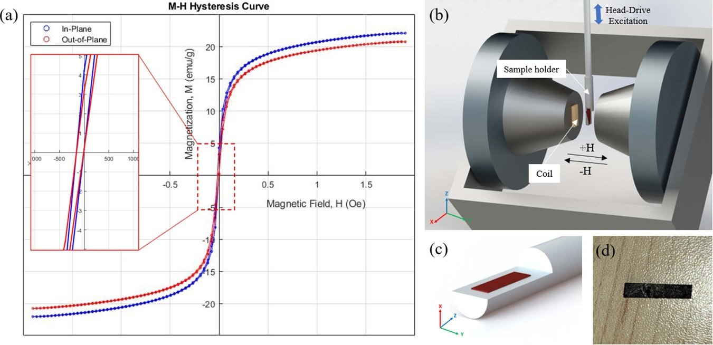
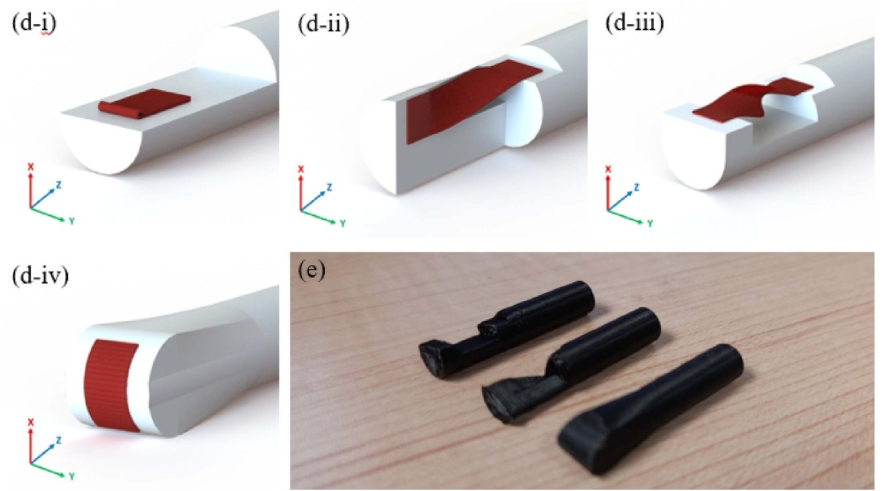
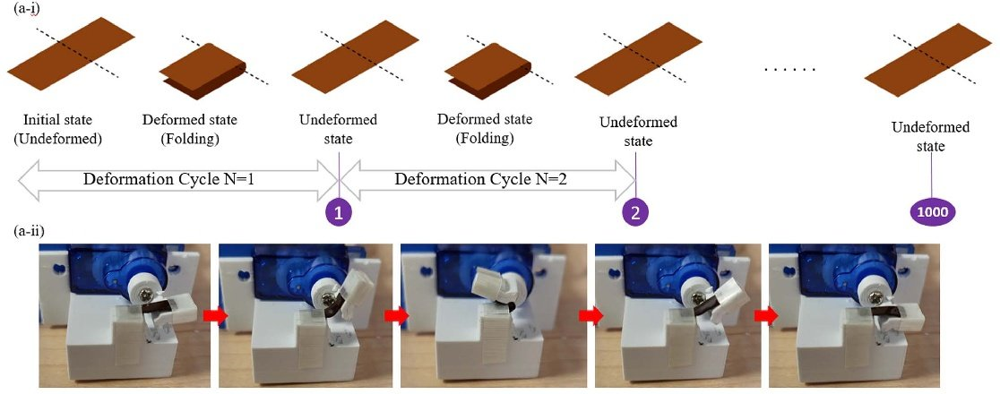
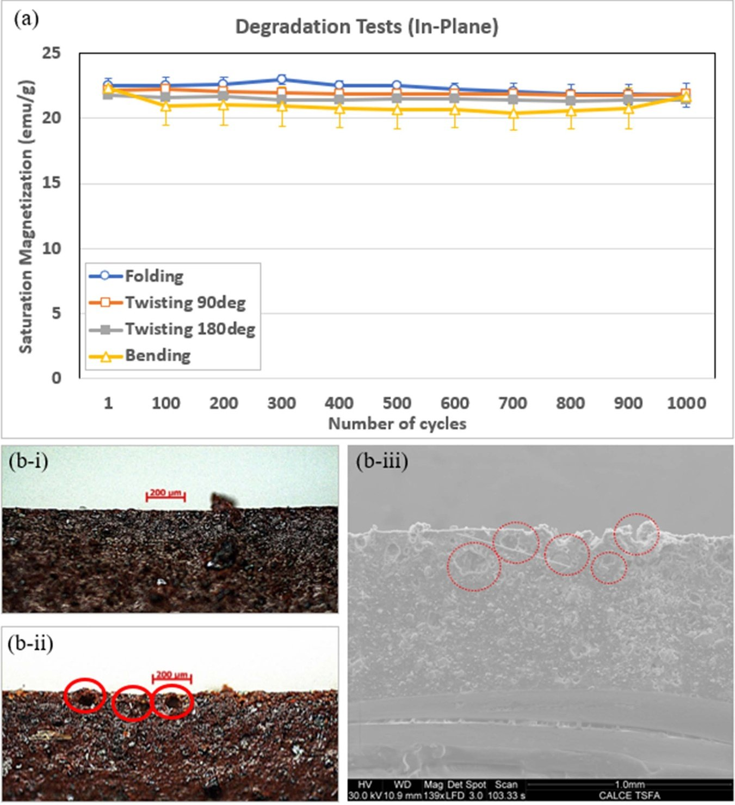

Wearable electronics live a hard life. A patch on your wrist or a sensor stitched into a shirt gets bent, folded and twisted every time you move. Whatever material does the work inside it has to keep working through all of that. This project asked a simple question about one such material, a soft magnetic film: if you keep bending it, does it stop being magnetic? The short answer is no. After 1,000 cycles of folding, twisting or bending, it lost at most about 3% of its magnetic strength.
Why this matters
Engineers often make "smart" flexible materials by mixing tiny functional particles into a soft polymer. The polymer supplies the flexibility; the particles supply the function. Mix magnetic particles into a silicone rubber and you get a film that is both bendable and magnetic. Films like this have been used for shielding electronics from electromagnetic interference, for tiny magnetically driven actuators and pumps, for flexible antennas, and for pressure sensors.
The most widely studied version combines a silicone called PDMS with iron-oxide (Fe3O4) nanoparticles. Both ingredients are cheap and easy to work with, and PDMS is safe against skin. Yet two practical questions had barely been tested:
- Does the film stay magnetic while it is folded, twisted or bent, not just while it lies flat?
- Does it stay magnetic after being deformed hundreds of times, the way a wearable device would be?
Earlier studies had looked at bending or stretching, but folding, twisting and long-term repeated deformation had not been measured. Without that data, nobody can say how long such a film would last inside a real device.
Making the film
The recipe is a lot like making a very fine paint and letting it set:
- Liquid PDMS is thinned with a solvent (xylene) and stirred for 30 minutes.
- Iron-oxide nanoparticles, each only 20–30 nanometres across and coated with oleic acid so they mix in more easily, are added and stirred for another 30 minutes at 60–80 °C.
- The mixture spends 12 hours in an ultrasonic bath, whose high-frequency vibrations break up particle clumps so the particles spread evenly.
- A curing agent is added and the mixture is poured onto a plate or into a shaped mould, less than 2 mm thick.
- It is cured into a solid, rubbery film: 6 hours at 120 °C on a hot plate, a few hours under UV light, or about a day at room temperature.
Eight recipes with different proportions of silicone, solvent and particles were made. The best one, about one-third iron oxide by weight, gave the strongest magnetic response and was used for all the tests below. For reference, the bare particles on their own reach about 60 units of magnetic strength (emu/g); the film reaches 21–23. That is the expected trade-off, since two-thirds of the film is non-magnetic rubber.
How magnetism was measured
Magnetic strength was measured with a vibrating sample magnetometer. The sample sits between the poles of a large electromagnet and is shaken up and down. As the field is swept from strongly positive to strongly negative, the moving magnetised sample induces a tiny electrical signal in pickup coils, which reveals how magnetised it is at each step. The result is a curve showing how the material responds to the field. Its highest point is the saturation magnetization, the most magnetic the material can get. This is the main number tracked in this study.
The flat film behaved exactly like a good soft magnet: it became strongly magnetic in the field and kept almost none of that magnetism once the field returned to zero. It was also slightly (about 5%) more magnetic along its surface than through its thickness, a small directional preference that probably came from the way it was cured on a hot plate.

Test 1: Measuring while folded, twisted and bent
A standard magnetometer holder only fits a flat sample. To measure the film while deformed, I designed and 3D-printed custom holders that clamp it in four shapes:

In none of the four shapes did the film lose magnetic strength. In several cases it measured slightly stronger while deformed. Folding raised the reading along the surface by about 21%, and bending by about 10%. Once the film was flattened again, its properties returned to normal.
Measured through the thickness of the film, the results were similar. The largest swing was bending, which raised the reading by about 55%. The one decrease was about 8%, in the half-twisted shape. Again, the film returned to normal once flattened.
Test 2: A thousand bends
Surviving one deformation is a good start; a wearable has to survive thousands. To test that, I built four small automated rigs, one for each deformation type. Each uses a hobby servo motor driven by a microcontroller. In each cycle the rig takes the film from flat to fully deformed and back again in about 7 seconds, pausing half a second at each end. Every film went through 1,000 cycles. Its magnetic strength was re-measured every 100 cycles, after an hour's rest so the rubber could relax.

Across all four tests the film lost only 1.4–3.2% of its magnetic strength, and the loss did not grow steadily from cycle to cycle. To find where the small loss came from, I cut the folded samples open and looked at them under optical and electron microscopes. Tiny holes had formed inside the film, in the regions that took the most stress. The surface showed no creases or cracks. Those internal holes slightly reduce the amount of magnetic material in the sample, which accounts for the small drop.

What this tells us
- The magnetism survives deformation. Folding, twisting and bending do not weaken the film while it is deformed, and it returns to its original state when released.
- The magnetism survives repetition. A thousand cycles of each deformation cost at most about 3% of the film's magnetic strength.
- The failure mode is identifiable. The small loss traces back to microscopic voids forming in high-stress regions. That gives a concrete target for improving the material.
- Reliability has to be tested, not assumed. Many flexible functional materials are reported from a single measurement on a flat sample. This work shows why repeated-deformation testing is needed before a material goes into a real device.
Scope of the study
The deformation tests used one composition (about one-third iron oxide by weight), one bending radius (3.18 mm), and 1,000 cycles per deformation type. Each deformation type was tested on its own, not combined.
Related review: soft magnetic films and devices
This co-authored review surveys the wider family of materials this project belongs to: films as soft as rubber that respond to magnets. It covers the two ingredients (a soft polymer such as PDMS, and magnetic particles such as iron oxide or NdFeB), how the films are made (moulding, casting, lithography and 3D printing), how they are tested mechanically and magnetically, and what they are used for: beating artificial cilia that pump fluid in lab-on-a-chip devices, small swimming and gripping robots, wearable sensors, and drug delivery and surgery. Its main argument is that new soft magnetic inks are still found by trial and error, and it proposes a design-first route that combines molecular and flow simulations with machine learning.
My role: the review was written largely by an undergraduate team in the UMD Gemstone Honors Program (lead author Anjali Dhamsania), supervised by Prof. Siddhartha Das. I checked all sections of the manuscript together with Beihan Zhao, and reviewed and edited the final version.
A. Dhamsania, W. Mah, A. Sivarajan, J. Ting, S. Chung, E. Carlson, A. Wang, G. Lee, B. Huynh, A. Chen, L. Mueller, C. Kim, S. K. Subudhi, B. Zhao, B. S. Chava and S. Das, Journal of Materials Chemistry C 10, 6563–6589 (2022). doi:10.1039/d2tc00388k
My role
As first author, I developed the film fabrication process and the eight test recipes. I designed and 3D-printed the deformation holders for the magnetometer, and built the four servo-driven cyclic-loading rigs. I ran the magnetic characterization and the 1,000-cycle durability tests, did the microscopy-based failure analysis, and wrote the paper. The work was done in Prof. Siddhartha Das's group at the University of Maryland, with collaborators from Mechanical Engineering, Materials Science and Electrical & Computer Engineering.
Read the paper: S. K. Subudhi, B. Zhao, X. Wang, J. Ting, I. Takeuchi, A. Dasgupta and S. Das, “Flexible and twistable free-standing PDMS-magnetic-nanoparticle-based soft magnetic films with robust magnetic properties,” Flexible and Printed Electronics 9, 015013 (2024). doi:10.1088/2058-8585/ad2dae (open access).
Figures 2, 4, 6 and 8 are reproduced (some cropped) from the paper; Figures 1, 3, 5 and 7 are redrawn from its data and schematics. The paper is published under a CC BY 4.0 licence.